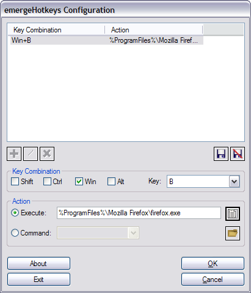

| About |
emergeHotkeys is the hotkey applet of Emerge Desktop. It defines a set of hotkeys which allow quick access to Emerge Desktop functions and other applications.
| Configuration |
emergeHotkeys is configured by pressing the Shift and Esc keys, which opens the configuration dialog box:
A hotkey can be assigned to an executable File  or to open a Folder with Explorer after selecting Execute, or to an Internal Command (list is here) after selecting Command.
or to open a Folder with Explorer after selecting Execute, or to an Internal Command (list is here) after selecting Command.
The user can also assign one of the Special Folders My Computer, My Documents, My Network Places, Control Panel, and Recycle Bin by typing it in the Execute window.
To Add  a Key Combination, a modifier Shift, Ctrl, Win or Alt (or none) is ticked, and a key from the drop list is selected, then Saved
a Key Combination, a modifier Shift, Ctrl, Win or Alt (or none) is ticked, and a key from the drop list is selected, then Saved  (or Discarded
(or Discarded  to start over). Pressing the OK button saves the current settings and closes the configuration dialog box.
to start over). Pressing the OK button saves the current settings and closes the configuration dialog box.
Menu items displayed in the window can be Modified  or Deleted
or Deleted  after highlighting them.
after highlighting them.
After the user adds, deletes or modifies incorrectly an item, changes can be undone by clicking the Cancel button. A dialog box opens asking for confirmation to close the configuration dialog box without saving the changes made.
Any keyboard key, including unused ones like Pause, can be assigned. It is wise not to set a character key without a modifier to prevent typing text.
If the hotkey selected is already in use by another program or reserved by the system, a warning message is displayed and the user has the opportunity to modify the key combination until a valid one is chosen.
Note: the Windows key alone can also be assigned by selecting LeftWinKey or RightWinKey from the Key drop list. The Win key alone doesn't work.
Prepending an Executable with "@" (e.g. "@%ProgramFiles%\Mozilla Firefox\firefox.exe") allows the execution of the command from an administrator account after selecting the administrator's user name (or typing an other existing user name) and entering the password in the Run As dialog box.
The Exit button closes the emergeHotkeys module. It can be restarted by highlighting it and clicking on the Start  button in the Launch Applet dialog box (see emergeCore).
button in the Launch Applet dialog box (see emergeCore).
| Usage |
After a hotkey has been defined, the user uses the key combination to execute the action specified.